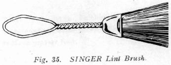
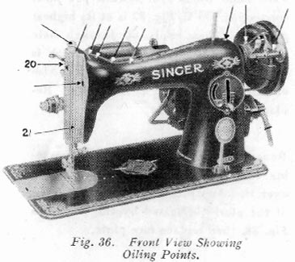
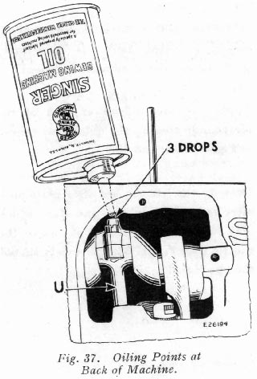
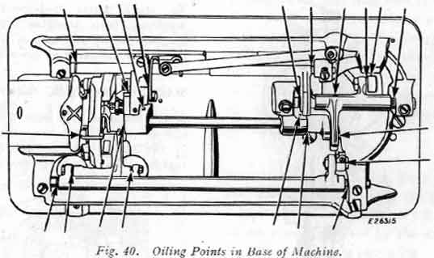
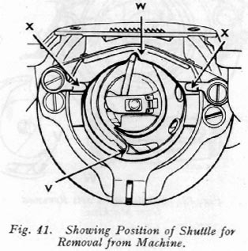
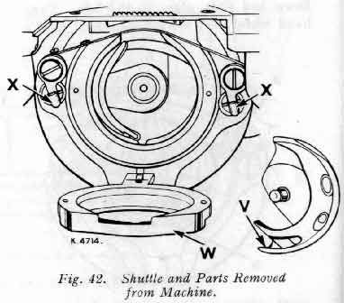

Your sewing machine was built to exacting standards of precision and workmanship. Its performance depends on the care and treatment it receives when in use and especially before storing away.
Lint and fluff, if not removed prior to storage will, during humid periods, absorb and hold moisture, and thus accelerate rust damage to highly polished thread handling and other exposed parts.
The extent of rust damage would depend upon the length of time the machine remained in idle storage in an unventilated closet, attic or basement room.
Sudden drops in temperature will cause moisture to form on parts, which if not protected by a film of oil, would rust and be damaged while in storage.
Proper storage care suggests thorough brush-cleaning to remove all traces of lint or fluff, followed by swabbing of all exposed parts with a lint-free brush saturated with SINGER oil.
See Fig. 34 for the areas that should be cleaned and coated with a protective coat of oil.

If the machine is used continuously, it should be oiled daily. If moderately used, an occasional oiling is sufficient.
Apply one drop of oil at each of the places indicated by the unlettered arrows in Figs. 36, 38, and 40.

Draw to the left the bed slide plate and after removing the lint and dust which may have accumulated, apply oil to the shuttle race V, Fig. 39.
The slide should then be closed.
Remove cover plate from back of machine.
Turn hand wheel over toward you until connecting rod U, Fig. 37 is set at its highest position.
Then apply oil through hole in top of machine to the wick which is retained in cap of connecting rod.
Also oil the other moving parts inside.
Remove face plate 21, Fig. 36, by loosening screw 20 and slipping the plate up over it.
Apply one drop of oil at each of the places indicated by the arrows in Fig. 38, then replace face plate.
To reach parts underneath the bed of the machine, turn machine back on its hinges.
Apply one drop of oil at each of the places indicated by arrows in Fig. 40
If the machine runs hard after standing idle for some time, use a little paraffin (US = kerosene) in the oiling places. Run the machine rapidly, then wipe clean and oil.
After considerable use, the stitch forming mechanism in the bed of the machine may become clogged with lint and this may interfere with the perfect operation of the machine.
Occasionally remove the shuttle from the machin, as instructed below, and remove any lint, etc., which has accumulated.

Draw bed slide plate to the left.
Turn hand wheel ove toward you until needle is at its highest and point of shuttle is at the position shown at V, Fig. 41.
Remove bobbin case and bobbin.
Flick shuttle race latches X, Figs. 41 and 42, downward. Swing top of shuttle race W downward on its hinge as shown in Fig. 43.
The shuttle V, Fig. 41 and 42 may now be easily removed and the parts cleaned.
See that the needle is at its highest point.
Replace shuttle with its point V in position in Fig. 41.

Swing top of shuttle race W, Fig. 42, upward on its hinge to position shown in Fig. 41.
Then flick latches X, Fig 42, toward each other to lock race W, Fig. 42, in position.
Replace bobbin and bobbin case and close bed slide plate.